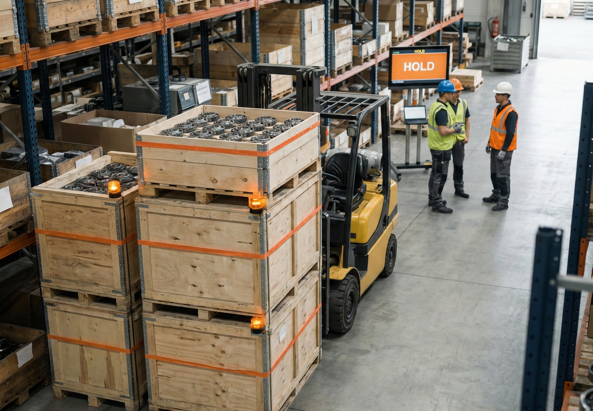
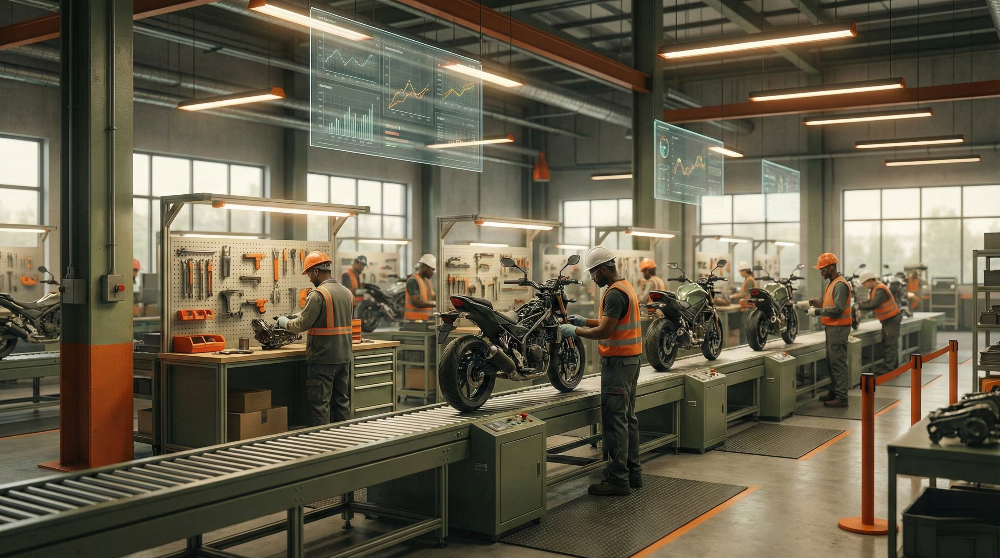
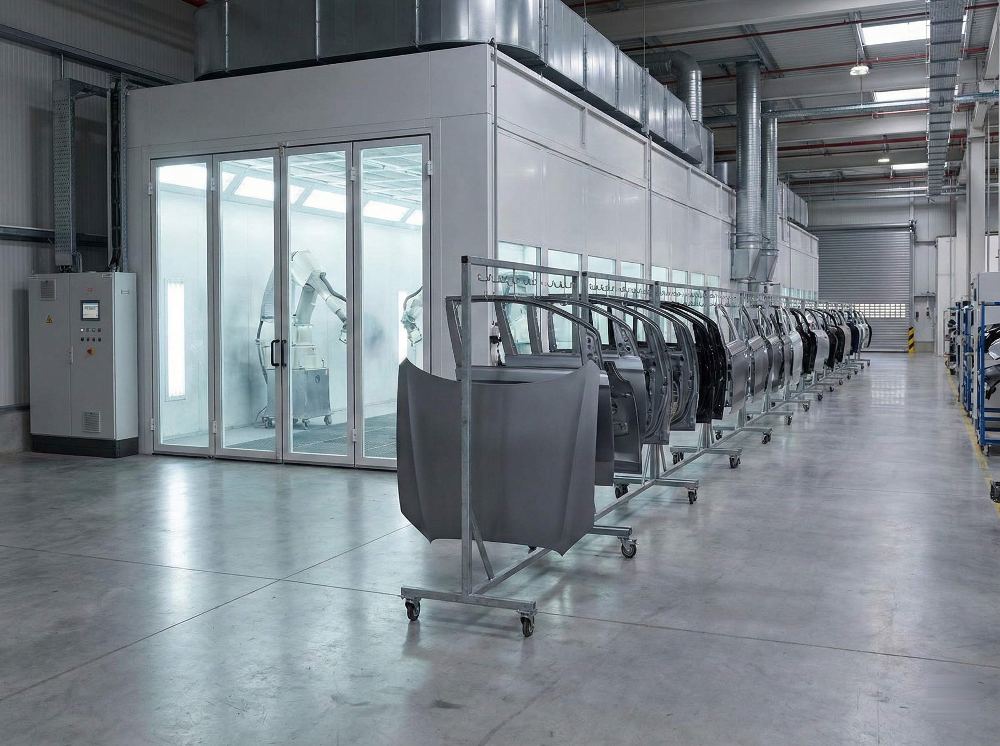
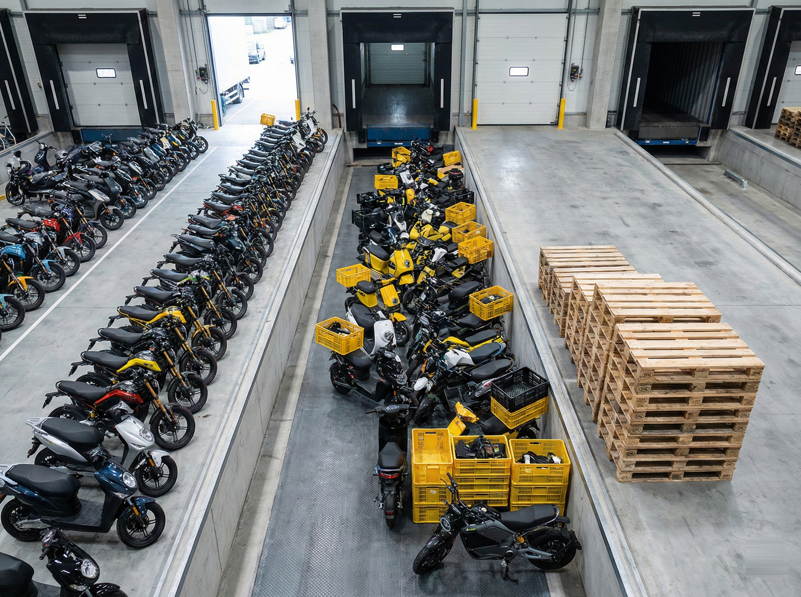

06:00
Shift Start
Front-fork line slows after bearing lot is late from stores.
Nexus Factory
Shift notes, stores updates, and dispatch calls already contain the truth. Nexus Factory is personal intelligence for manufacturing teams, turning daily noise into a short action list: what is slipping, what to do now, and who needs to move.

Frame prep, paint, final assembly, and dispatch are all running. By mid-shift, small delays start stacking. Here is what that day looks like and what the team can do immediately.

06:00
Front-fork line slows after bearing lot is late from stores.

10:30
Paint queue rises and WIP builds before final assembly.

15:30
Two dealer shipments are now exposed because assembly and packaging are both behind plan.
"Line 2 likely to lose output for next 3 hours due to bearing shortage. Move technician to station B14, release stores lot now, and prioritize D-204 and D-219 in packaging to hold dispatch date."
Share your current production pain point. In 20 minutes, we will map one real issue from your floor and show how the assistant would handle it with your existing update flow.
No software install needed. 20-minute conversation only.
Your plant already has the signals needed to run better.
The challenge is speed of decision: updates sit in different places across production, stores, maintenance, and dispatch.
We are building personal intelligence for manufacturing: one shift-level view with clear priorities, owners, and next actions.
If this matches your daily reality, we would value a short working session with your team.